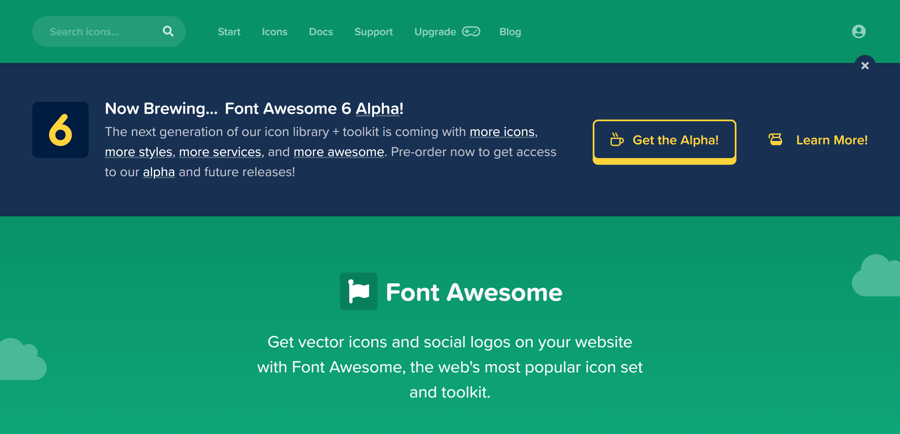
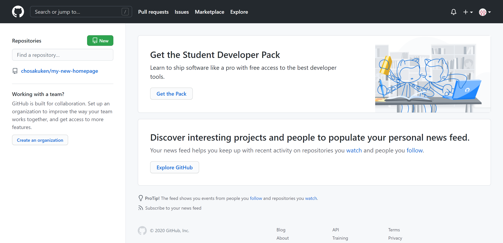
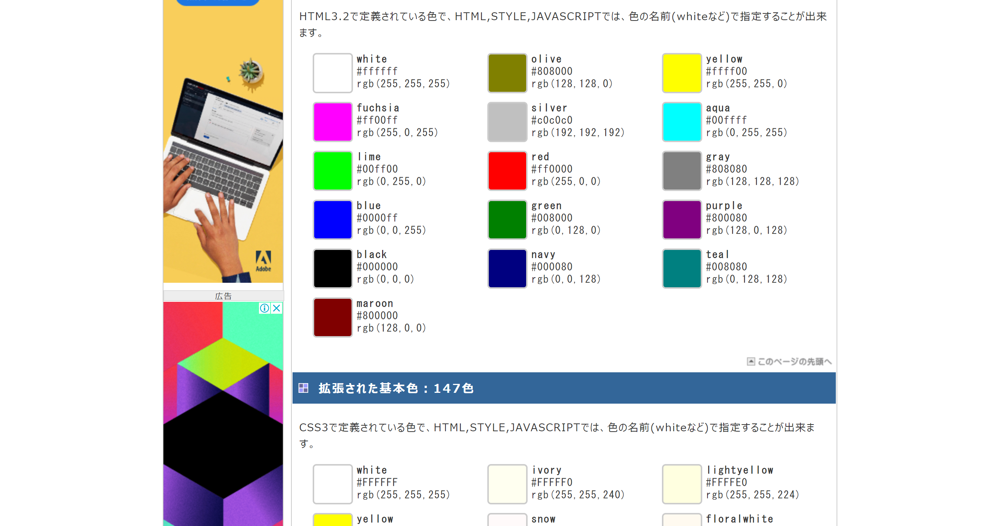

HTMLで記事を作ってみた
•言語について
正確に言うと、HTML&CSSです。両方ともWeb制作の基礎となる言語です。両方ともゲーム制作の言語より簡単なイメージがあります。
•使用サイト
まずFont Awesomeというサイトは必須だと思います。ダウンロードなどの各種マークを必須です。記号はブラウザや閲覧状況によって文字化けするので、各種進数やプラグインで済ませちゃった方が無難です。自分の周りのカップルがペアステメ(ラインでお揃いのプロフィールメッセージにすること)をしてたんですが、自分文字化けして何やってるのかわかりませんでした。そういった悲しみを生み出さないためにFont Awesomeは必ず使いましょう。自分はサーバーとかあんまり詳しくないのでGitHubというサイトに丸投げしてます。GitHubはスクリプトをコピペするだけで勝手にサイトができてます。初めて自分のURLを打ち込んで、自分の(たいしたことない)サイトを開いたときは感動しました。そのくらい簡単です。あと、自分がお世話になっているサイトがWebカラー見本一覧というサイトです。RGB値で色を指定するのはなかなか大変です。なぜなら、美術や図工でならう三原色が通じないから。そんなときにここのサイト様。たいてい自分が思い描いている色がRGB値の形式であります。
ここの三つのサイトはイメージ図と共にそのサイトに飛べるようにしておきます！

GitHub

Webカラー見本一覧
